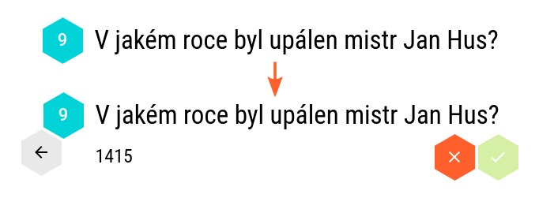

<link rel="import" href="../../bower_components/polymer/polymer.html">
<link rel="import" href="../../bower_components/polymer-ts/polymer-ts.html">

<link rel="import" href="../../bower_components/paper-button/paper-button.html">
<link rel="import" href="../../bower_components/paper-icon-button/paper-icon-button.html">
<link rel="import" href="../../bower_components/iron-icon/iron-icon.html">
<link rel="import" href="../../bower_components/iron-flex-layout/iron-flex-layout.html">
<link rel="import" href="../../bower_components/iron-ajax/iron-ajax.html">

<link rel="import" href="../../bower_components/paper-styles/default-theme.html">
<link rel="import" href="../../bower_components/paper-styles/typography.html">

<link rel="import" href="../az-icons.html">

<dom-module id="az-help-screen">
  <template>
    <style>
      :host {
        display: block;
        position: relative;
        color: var(--primary-text-color);
        @apply(--paper-font-body1);
      }

      .content {
        margin: 21px 60px;
      }

      #backButton {
        float: left;
        margin-left: -48px;
        margin-right: 8px;
      }

      .header-box {
        @apply(--layout-horizontal);
      }

      .header-box h1 {
        @apply(--layout-flex);
      }

      paper-button {
        @apply(--paper-font-button);
        margin: 4px;
      }

      paper-button:first-child {
        margin-left: 0;
      }

      @media (max-width: 530px) {
        .content {
          margin-left: 16px;
          margin-right: 16px;
        }

        #backButton {
          margin-left: -8px;
        }
      }

      @media (max-width: 690px) {
        paper-button {
          display: -ms-flexbox;
          display: -webkit-flex;
          display: flex;

          margin-left: 0;
          margin-right: 0;
        }
      }

      a {
        text-decoration: none;
      }

      img {
        display: block;
        margin: 0 auto;
        max-width: 200%;
      }

      h1 {
        @apply(--paper-font-display1);
        margin: 0;
      }

      h2 {
        @apply(--paper-font-title);
      }


      #downloadButton {
        --paper-button: {
          background: var(--primary-color);
          color: var(--dark-theme-base-color);
        }
      }

      #openButton {
        --paper-button: {
          color: var(--primary-color);
        }
      }

      .excel-table {
        border-collapse: collapse;
      }

      .excel-table td {
        padding: 4px;
        border: 1px solid #9b9b9b;
      }

      .excel-table tr:first-child td,
      .excel-table td:first-child {
        background-color: #303030;
        color: #aaaaaa;
        text-align: center;
        border-color: #646464;
      }
    </style>

    <iron-ajax
      id="demoFileAjax"
      url="/demo.xlsx"
      handle-as="arraybuffer"
      on-response="_onDemoFileResponse"></iron-ajax>

    <div class="content">
      <div class="header-box">
        <paper-icon-button
          id="backButton"
          icon="az:arrow-back"
          on-tap="_onBackTap">
        </paper-icon-button>
        <h1>Tvorba otázek pro <span style="font-weight: 300;">AZ</span><span style="font-weight: 900;">Kvíz</span></h1>
      </div>
      <p>Pro zahájení hry je nutné dodat vlastní soubor s otázkami a odpověďmi ve formátu .xlsx vytvořený buďto v aplikaci MS Excel 2007 a vyšší nebo ve zdarma dostupném LibreOffice Calc.</p>
      <p>Pro rychlý start doporučujeme prozkoumat ukázkový soubor:</p>
      <p>
        <a href="/demo.xlsx">
          <paper-button id="downloadButton" raised>
            <iron-icon icon="az:file-download"></iron-icon>
            Stáhnout ukázkový soubor
          </paper-button>
        </a>
        <paper-button id="openButton" on-tap="_onOpenButtonTap">
          <iron-icon icon="az:play-arrow"></iron-icon>
          Otevřít ukázkový soubor
        </paper-button>
      </p>
      <p>
        Vytvořit soubor s otázkami není nic těžkého. Měl by mít následující strukturu:
      </p>
      <ul>
        <li><strong>1. sloupec (A):</strong> Otázka</li>
        <li><strong>2. sloupec (B):</strong> Správná odpověď</li>
        <li><strong>3. sloupec (C):</strong> První špatná odpověď (volitelné, zobrazí se jako další možnost. Když chybí, otázky jsou otevřené.)</li>
        <li><strong>Další sloupce (D+):</strong> Další špatné odpovědi pro zmatení nepřítele (volitelné)</li>
      </ul>
      <p>
        V Excelu může schéma vypadat třeba následovně:
      </p>
      <table class="excel-table">
        <tr>
          <td></td>
          <td>A</td>
          <td>B</td>
          <td>C</td>
          <td>D</td>
        </tr>
        <tr>
          <td>1</td>
          <td>První otázka</td>
          <td>Správná odpověď</td>
          <td></td>
          <td></td>
        </tr>

        <tr>
          <td>2</td>
          <td>Druhá otázka</td>
          <td>Správná odpověď</td>
          <td>První špatná</td>
          <td></td>
        </tr>
        <tr>
          <td>3</td>
          <td>Třetí otázka</td>
          <td>Odpověď na třetí otázku</td>
          <td></td>
          <td></td>
        </tr>
        <tr>
          <td>4</td>
          <td>Čtvrtá otázka</td>
          <td>Správná odpověď</td>
          <td>První špatná</td>
          <td>Druhá špatná</td>
        </tr>
      </table>


      <h2>Jak hra probíhá?</h2>
      <p>Po otevření souboru je možné vybrat začínající tým (oranžový, modrý nebo náhodně).</p>
      
      <p>Na obrazovce s pyramidou je nahoře vidět barva týmu, který je na řadě. Hráč z týmu vybere hex, který není obsazený.</p>
      
      <p>Zobrazí se náhodně vybraná otázka. Pokud je u otázky více odpovědí, zobrazí se promíchané. Když hráč vybere správnou odpověď, získá vybraný hex pro svůj tým.</p>
      
      <p>V případě otevřených otázek s jedinou zadanou odpovědí se zobrazí pouze otázka. Hráč odpoví nahlas nebo na tabuli a pro kontrolu klepnutím na otázku zobrazí správnou odpověď. Podle svého svědomí (a davového nátlaku) si potom sám klikne, jestli odpověděl správně nebo špatně.</p>
      
      <p>Cílem je, stejně jako v televizní hře, propojit všechny tři stěny pyramidy. Aplikace zatím neumí konečný stav sama rozpoznat.</p>
    </div>
  </template>

  <script src="az-help-screen.js"></script>
</dom-module>
